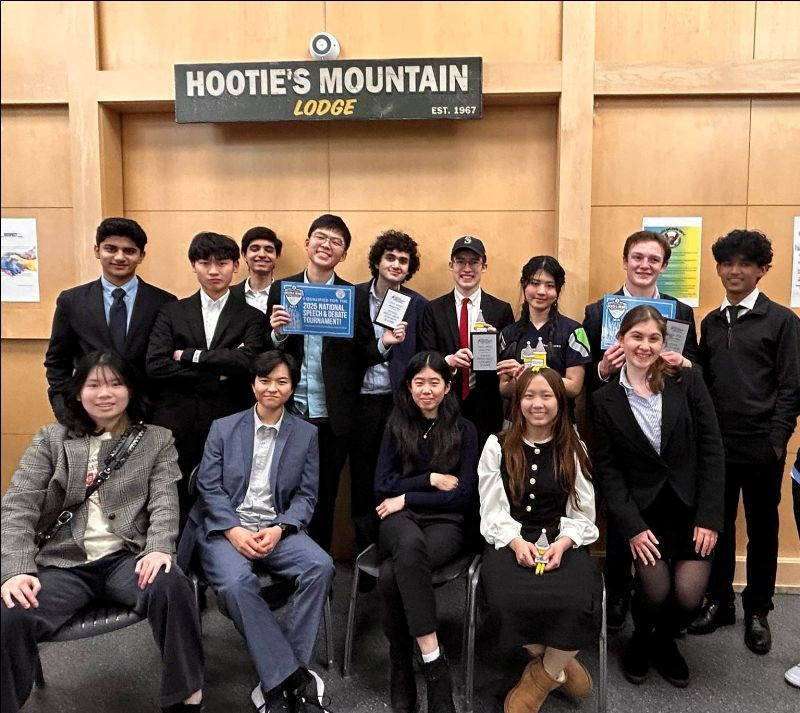

Extemp
Fred started competing in Extemp his Sophmore year. With his friend and colleuge Andrew they founded the schools speech team. Last year,
Fred advanced to state finals and qualified for nationals as well. This year, Fred placed third at state and qualified for nationals again,
where he hopes to make it to elimination rounds.

This is a photo of Fred at national qualifiers

EPS debate co-champs Alex and Audredy with EPS debate co-champs Cyrus and Fred
Public Forum
Last year, Fred succesfully competed in novice Public forum, co-champing one tournament, advanced to finals in the other, and winning
the best speaker award in both. This year, with his partner Cyrus Oomen, Fred co-champed states and qualified for the prestigious
Tournament of Champions. Fred also placed second best speaker in the state of Washington.